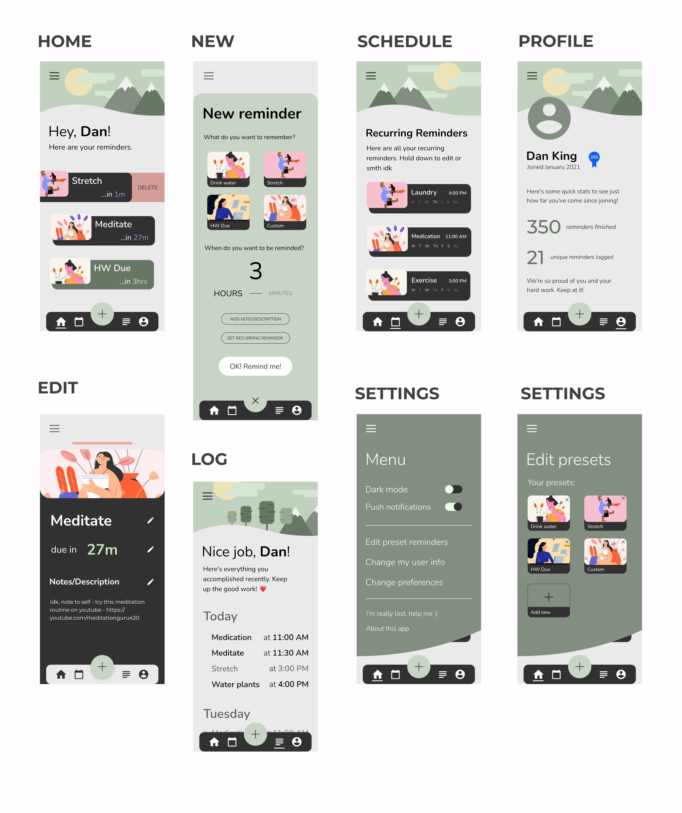
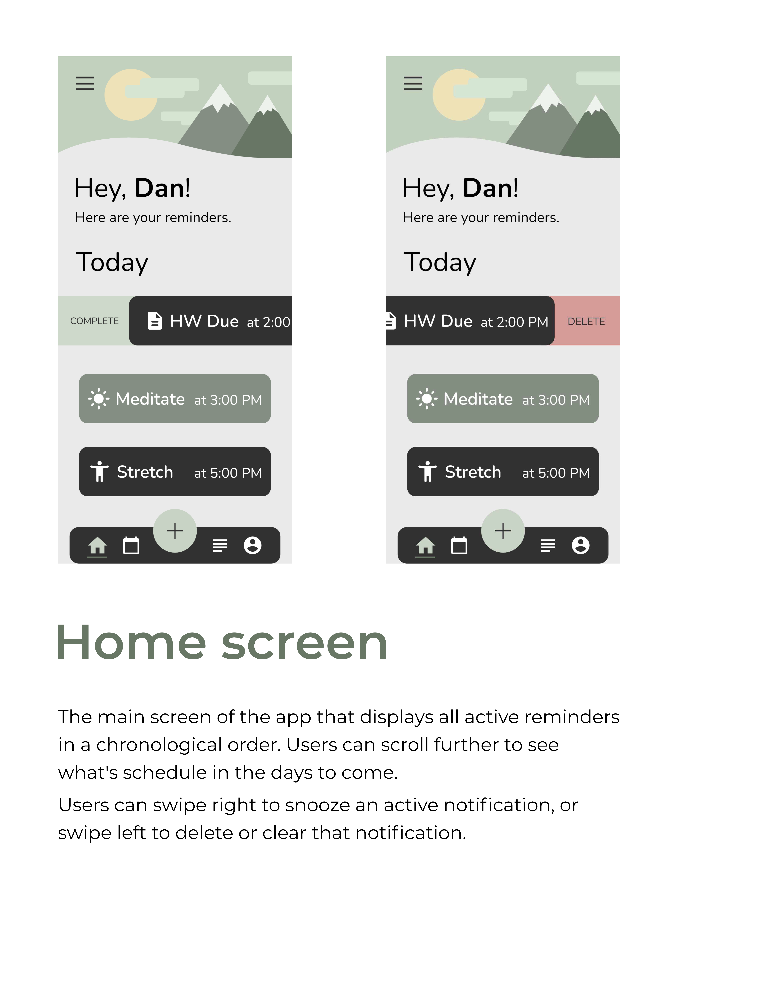
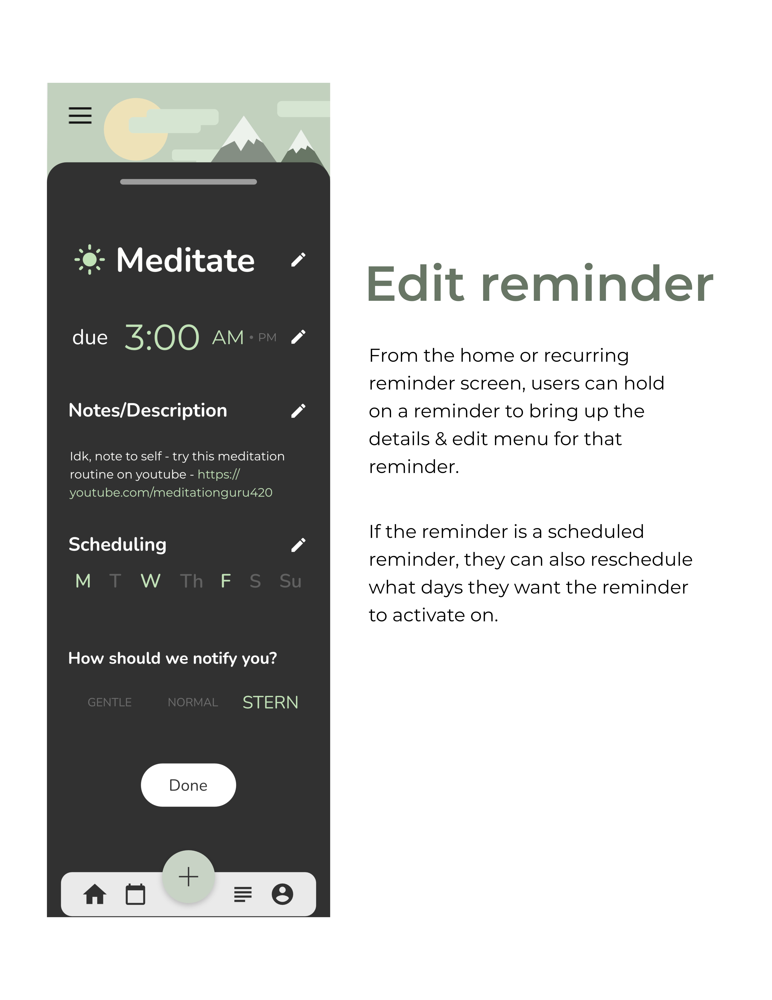
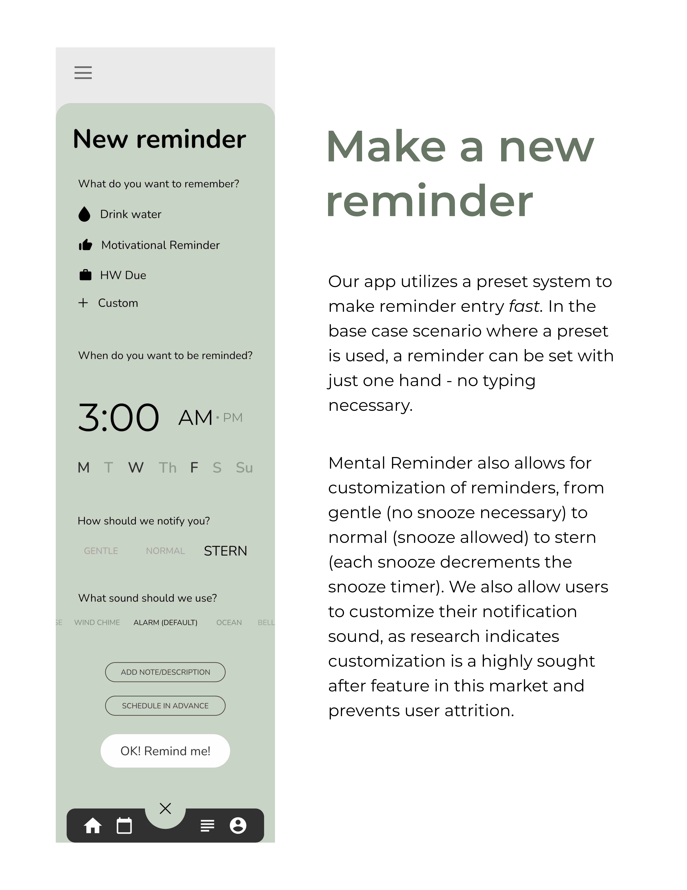
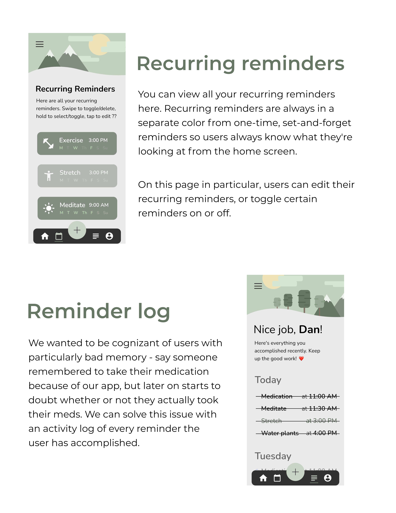
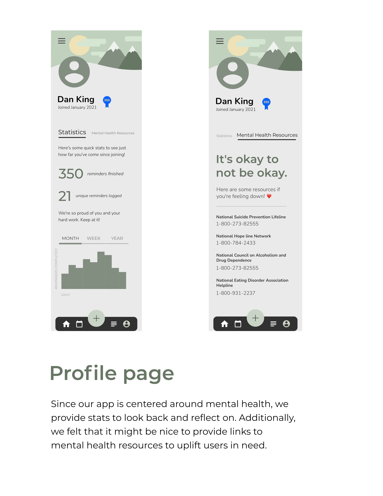

Research Methodology
During the research phase of this project, we conducted systematic literature review, system analysis, and user testing. Throughout these three steps, we produced three separate high fidelity iterations on the initial prototype as a group, adjusting as we went along based on our findings.
Systematic Literature review
We conducted systematic literature review over 12 papers. These papers were mostly to help us understand the unique user needs and requirements when designing for mental health. The most pertinent takeaways were as follows:
1. Based on research analyzing mental-health app reviews, users value user interface and the user friendlienss of the app. They also appreciate customization and designing for trust. (Source)
2. Keep it simple - don't overload the user's cognitive load, especially when designing for those with mental-health concerns. (Source)
Initial Group Prototype
System analysis
Our goals going into the System Analysis were primarily to conduct market research and lay the groundwork for establishing an initial feature set. We went through 12 existing solutions on the market - these solutions were either reminder based solutions (i.e. Outlook calendar, iOS reminders app, etc.) or mental health focused (popular journaling apps, meditation apps).
The reminder apps that we went over gave us a good sense of what would be considered a 'normal' user flow for the relevant use cases. We got a good feel for what the meta was as far as reminder interaction paradigms were, and we had a good sense of what to change and what to keep. We also found that the analysis conducted enforced our initial hypothesis that a lot of the existing reminder applications were either too complex for simple and direct workflows or were too generally convoluted.
Looking at apps that catered to mental health might not be considered as competitor analysis, but by doing so, we were able to get a better understanding of how to design for mental health in mind. We found that certain color combinations and palettes were better than others, and we also discovered how to design UI elements to appear more friendly rather than sterile.
Updated Prototype

User studies
Throughout the design process, we made sure to test and validate our prototypes during every minor and major iteration. Once we reached the formal user testing phase, we already had polished out the majority of the obvious issues, so we were able to go much more into detail on what needed fixing.
During the user interviews themselves, we made the realization that users aren't limited to just one app to use. Our questions were structured around identifying key user needs that we might have missed as well as general workflow questions around those who need assistance with remembering things, and it dawned on us that having a significantly more sparse featureset wouldn't be a problem as people have different apps for different needs.
For example, someone might use the Outlook calendar to schedule religiously in conjunction with a reminder's app for smaller day-to-day things, such as watering plants. With this in mind, we had a better idea of what workflows to cater to and we had a stronger vision for our product in the end.
Final Prototype
    